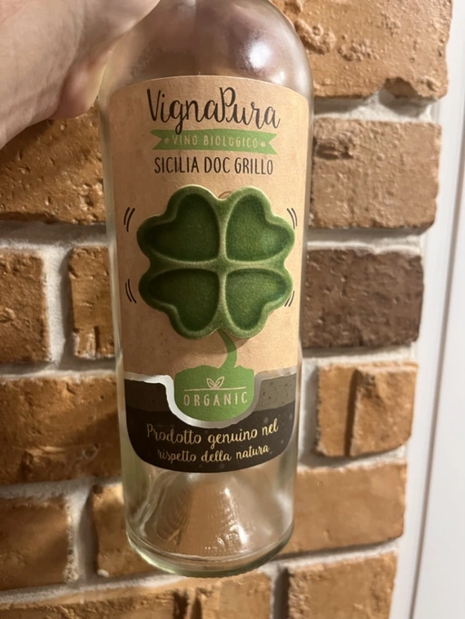

- Type
- White Still, Dry
- Producer
- Cinque Segni
- Vintage
- 2020
- Location
- Italy, Sicilia DOC
- Grapes
- Grillo
- Alcohol
- 13.5
- Sugar
- NA
- Price
- 547 UAH
- Cellar
- N/A
Ratings
2022-07-26 - 7.25
In my experience, atypical Grillo. Lots of green notes, like grass, lime, and green apricot. With time it opens up with some tropical notes, like passion fruit and melon. Bright acidity. It lacks balance and completeness. The palate is split into two parts. We can talk about evolution, which is present here, but in this case, it acts more like a bridge between these two parts.
By the way, the clover on the label is ceramic. In case you wondered. Now you do, right?